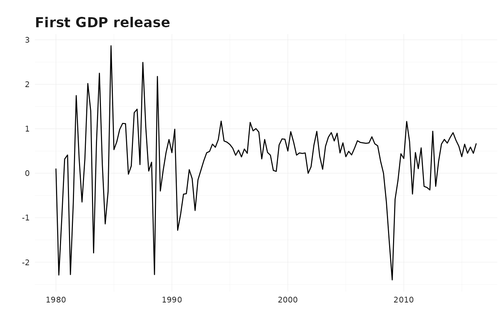

Analysing GDP revisions in the UK
gdp_uk.RmdIN PROGRESS
library(reviser)
library(dplyr)
#>
#> Attaching package: 'dplyr'
#> The following objects are masked from 'package:stats':
#>
#> filter, lag
#> The following objects are masked from 'package:base':
#>
#> intersect, setdiff, setequal, union
library(tsbox)
data <- gdp_uk %>%
ts_pc() %>%
filter(time >= "2000-01-01") %>%
na.omit()
data_wide <- vintages_wide(data)
tail(data_wide[,c(1, (ncol(data_wide)-5):ncol(data_wide))])
#> # A tibble: 6 × 7
#> time `2015-06-01` `2015-09-01` `2015-12-01` `2016-03-01` `2016-06-01`
#> <date> <dbl> <dbl> <dbl> <dbl> <dbl>
#> 1 2015-01-01 0.373 0.367 0.374 0.457 0.263
#> 2 2015-04-01 NA 0.653 0.542 0.601 0.421
#> 3 2015-07-01 NA NA 0.450 0.447 0.439
#> 4 2015-10-01 NA NA NA 0.588 0.683
#> 5 2016-01-01 NA NA NA NA 0.449
#> 6 2016-04-01 NA NA NA NA NA
#> # ℹ 1 more variable: `2016-09-01` <dbl>
data_long <- vintages_long(data)
#> Warning: The input data is already in long format.
dta2 <- get_first_release(data_long)
dta3 <- get_latest_release(data_long)
p <- plot_vintages(dta2, dim_col = "release", title = "First GDP release")
p
releases <- get_nth_release(data_long, n = 0:19, diagonal = TRUE)
rev_summary <- get_revision_analysis(releases, get_latest_release(data_long))
#> Warning: Both 'release' and 'pub_date' columns are present in 'df. The
#> 'release' column will be used.
rev_summary
#> # A tibble: 20 × 10
#> release N `Bias (mean)` `Bias (p-value)` Minimum Maximum `Std. Dev.`
#> <chr> <dbl> <dbl> <dbl> <dbl> <dbl> <dbl>
#> 1 release_0 66 0.0656 0.168 -1.04 0.850 0.383
#> 2 release_1 65 0.0584 0.216 -0.971 0.865 0.376
#> 3 release_10 56 0.0464 0.312 -0.807 0.867 0.340
#> 4 release_11 55 0.0566 0.195 -0.807 0.867 0.320
#> 5 release_12 54 0.0676 0.127 -0.750 0.867 0.321
#> 6 release_13 53 0.0456 0.266 -0.750 0.674 0.295
#> 7 release_14 52 0.0293 0.446 -0.750 0.651 0.275
#> 8 release_15 51 0.0106 0.784 -0.750 0.651 0.273
#> 9 release_16 50 0.00975 0.823 -0.741 0.839 0.307
#> 10 release_17 49 0.0159 0.731 -0.741 0.839 0.322
#> 11 release_18 48 0.0176 0.700 -0.741 0.839 0.315
#> 12 release_19 47 0.0513 0.267 -0.741 0.839 0.313
#> 13 release_2 64 0.0715 0.137 -0.945 0.892 0.380
#> 14 release_3 63 0.0841 0.0833 -0.962 0.976 0.379
#> 15 release_4 62 0.0618 0.200 -0.758 0.817 0.375
#> 16 release_5 61 0.0797 0.0984 -0.758 0.711 0.371
#> 17 release_6 60 0.0675 0.163 -0.789 0.711 0.370
#> 18 release_7 59 0.0671 0.157 -0.789 0.711 0.359
#> 19 release_8 58 0.0505 0.261 -0.789 0.711 0.339
#> 20 release_9 57 0.0416 0.353 -0.807 0.711 0.335
#> # ℹ 3 more variables: `Noise/Signal` <dbl>, Correlation <dbl>,
#> # `Correlation (p-value)` <dbl>